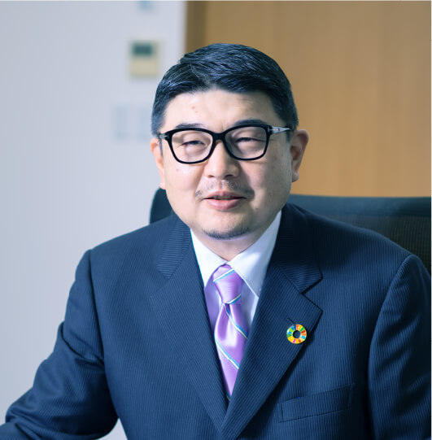

りんかい日産建設の
サステナビリティ経営、始動
2022年度、りんかい日産建設の
サステナビリティ経営への挑戦がいよいよ始まります。
その土台づくりとして2021年から当社が行っている
「SDGs勉強会」で講師を務める岸和幸先生と
代表取締役の前田祐治が、りんかい日産建設の取り組むべき
重要課題と実現したい未来像について、
そして建設業界は今後どうあるべきかについて、
じっくりと語り合いました。
人・社会・環境との共生へ

─ 岸：一月中旬、トンガで海底火山の大規模噴火が起こりました。こういった「100年に一度」と言われる大規模な自然災害が頻発するなど、近年は不確実なことが増えたと感じています。こうした状況の中で、りんかい日産建設様がサステナビリティ経営に舵を切り出すというのは、非常に高い意義があると思います。
─ 前田：ありがとうございます。
─ 岸：早速本題に入りますが、御社は2026年に創業100年を迎える、非常に歴史がある会社です。そして陸上の建設工事だけでなく海上にも対応できるという、独特の強みがあります。一言でまとめると「陸も海も」ですね。
 現東京羽田空港第1期敷地造成工事
現東京羽田空港第1期敷地造成工事
（大正15(1926)年 着工）
─ 前田：当社は海上土木工事を得意とする「りんかい建設」と、陸上土木工事・建築工事を展開していた「日産建設」が平成15(2003)年に合併してできた会社です。事業領域は異なっていましたが、両社とも社会貢献度の高い公共事業を多く手掛けていたという共通点があります。りんかい建設は創業当時の羽田沖の埋め立て工事を手掛け、八郎潟干拓事業でも中心的役割を果たしました。その後も港湾工事を中心に事業を展開し現在に至っています。日産建設は関東大震災の復興工事を手始めに、新田次郎の小説『ある町の高い煙突』の題材にもなった、煙害回避を目的とした日立鉱山の大煙突の建設も手掛けています。昭和の時代からは、空港・トンネル・道路の建設、近くは東日本大震災における復興工事など、多くの国家事業にも参画してきています。
─ 岸：公共インフラ構築や災害復興がルーツにある、と言えますね。
─ 前田：りんかい建設の創業者である渡辺了武（わたなべ のりたけ）、そして日産建設の創業者である宮長平作（みやなが へいさく）の二人は、分野は異なりますがともに技術者であり、技術を最大限に活用することで、事業を通じて社会貢献を果たしてきました。
─ 岸：私には、御社の事業内容における社会価値の高さが、理念や社風と密接に結びついているように感じられます。
─ 前田：当社は「人（人の笑顔を第一に考えます）・社会（社会のニーズに対して幅広い技術でお応えします）・環境（環境と調和を図り、自然との共生を推し進めます）」を経営理念にしています。顧客満足はもちろんのことですが、経営理念を通じて当社が携わる事業を通し、すべての関係者が持続発展していくことを願っています。
─ 岸：生い立ちの異なる二つの会社が一つになることで得られた利点や、大きな変化はありましたか？ 逆に、変わらない点もあるのかもしれませんが。
─前田：社員が「真面目」で「協調性」があるという点は共通しています。お客さまからも高く評価していただき、継続的に発注をいただけている顧客も多く存在します。真面目さを活かして新たなことに挑戦し改革する力が身に付けば、さらなる飛躍が期待できるのではないでしょうか。急速な変革に直面している建設業界の中にあっても伸びしろのある会社だと思います。
─ 岸：建設業界は大きな転換期を迎えているのですね。どのような変化なのでしょうか。
─ 前田：働き方改革の推進、生産性向上への取り組み、CSR※1、SDGs※2、サステナビリティや脱炭素への取り組みなど、近年は建設業界に対する社会的な要請が急速に増えてきています。こうした状況において、社会に認められる企業として生き残っていくには変化への高い適応力が必要です。「お客さまから仕事をいただき、つくって終わり」では、業界からも社会からも完全に取り残されてしまいます。
─ 岸：チャールズ・ダーウィンが、生物が生き残るためには環境に適応する力、つまり変化が大切だという適者生存の法則を主張したという話があります。前田社長がおっしゃるとおり、企業にも同じことが言えると思います。ただし、企業は組織全体が一体化して適応していく必要があります。今後は、今の社風を大切にすべき部分と変えていく部分、両方が必要なのかもしれませんね。
※1 Corporate Social Responsibility（企業の社会的責任）。企業が組織活動を行う際に果たすべき社会的責任のこと。企業には、ステークホルダー（その企業の利害関係者のこと。消費者をはじめとする社会全体を指す）からの、「環境配慮」や「社会貢献」といったさまざまな要請に対して、適切に対応する義務があるとする考え方。
※2 Sustainable Development Goals（持続可能な開発目標）。2015年9月の国連サミットで加盟国の全会一致で採択された、2030年までに持続可能でよりよい世界を実現するための国際目標。17のゴールと169のターゲットから構成され、地球上の「誰一人取り残さない」ことを誓っている。
2022年度は
「サステナビリティ経営元年」

─ 岸：建設業界は現在、サステナビリティ関連の社会的要請が増えているということですが、りんかい日産建設様のサステナビリティ経営は、2021年の準備期間を経て、本年度から本格稼働となりますね。
─ 前田：2021年7月にCSR推進課を立ち上げました。
─ 岸：今後は、この部署が中心となってサステナビリティを推進するわけですね。スタート段階として、他にはどんなことをされていますか？
─ 前田：新たな方向性を明確化するために、中期経営計画を刷新することにしました。現在の中期経営計画は2022年度末までだったのですが、急速な社会の変化に対応するため、2022年度から24年度までを期間とし、CSR、SDGs、サステナビリティや脱炭素への取り組みも重要課題の一つとして策定しました。
─ 岸：社会や業界、時代の変化に対して、明確な方針を打ち出すということですね。
─ 前田：新中期経営計画の刷新と併せて「業務改善委員会」と「働き方改革委員会」を設置し「環境・再生エネルギー部」も新設しました。